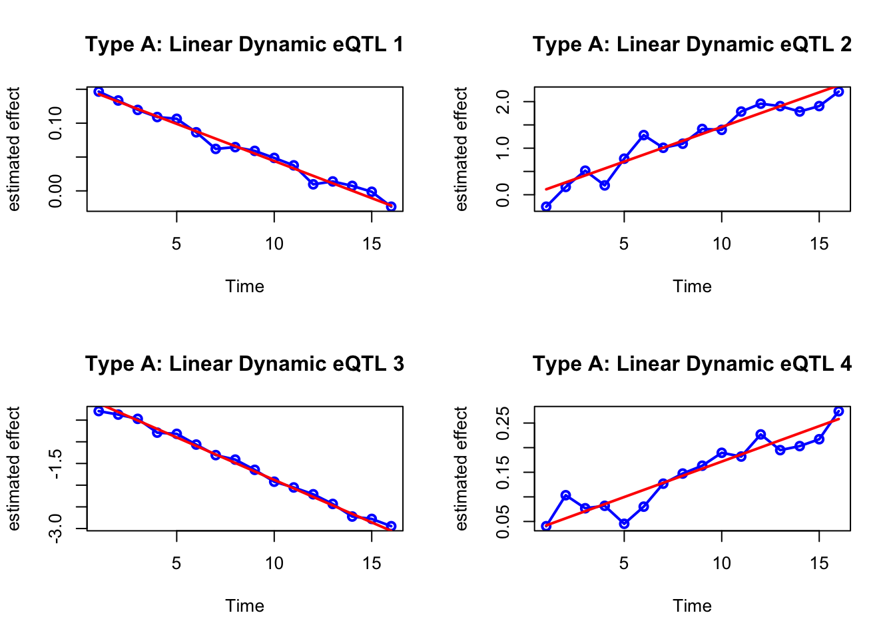
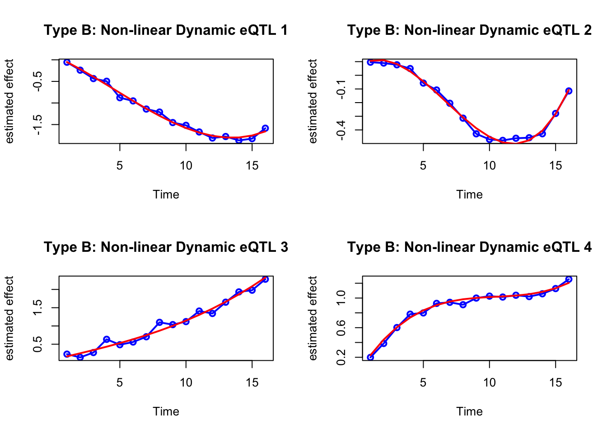
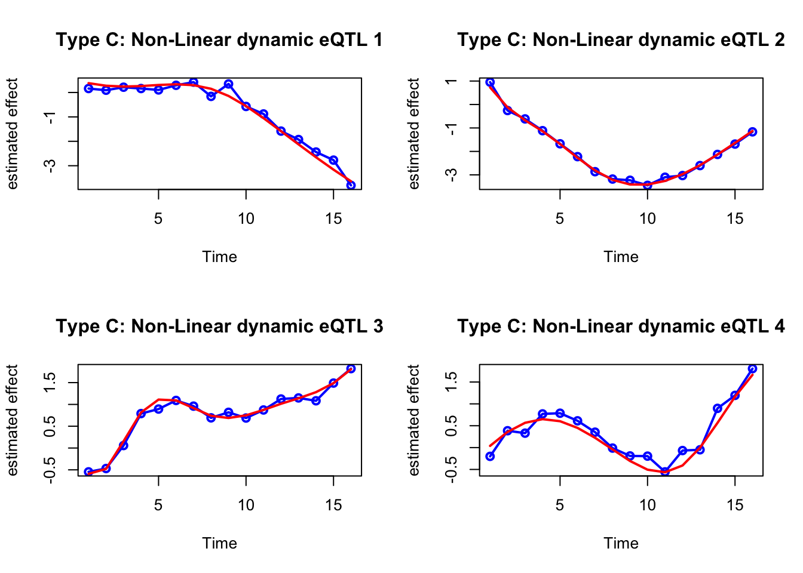
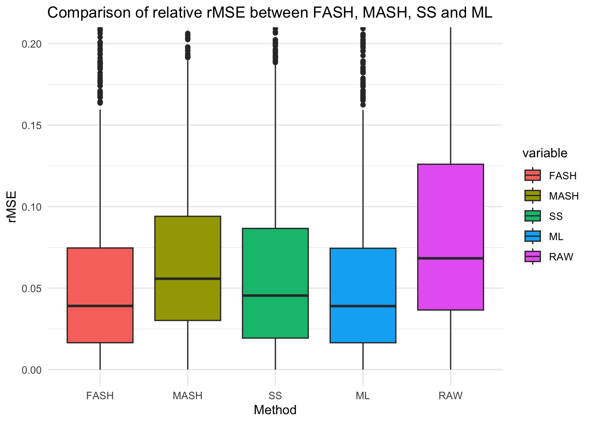
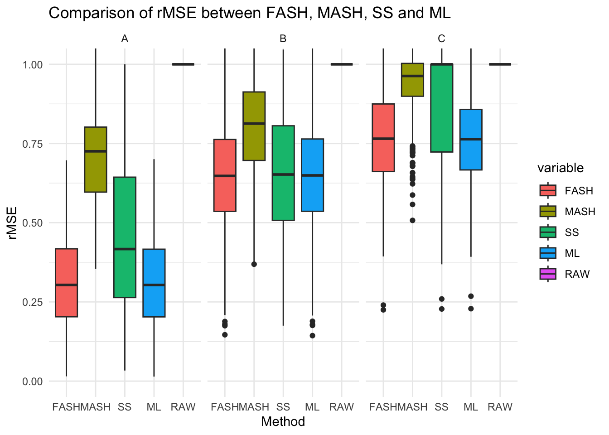

simulation_eQTL
Ziang Zhang
2024-05-19
Last updated: 2024-05-20
Checks: 7 0
Knit directory: FASHresultsummary/
This reproducible R Markdown analysis was created with workflowr (version 1.7.1). The Checks tab describes the reproducibility checks that were applied when the results were created. The Past versions tab lists the development history.
Great! Since the R Markdown file has been committed to the Git repository, you know the exact version of the code that produced these results.
Great job! The global environment was empty. Objects defined in the global environment can affect the analysis in your R Markdown file in unknown ways. For reproduciblity it’s best to always run the code in an empty environment.
The command set.seed(20240507) was run prior to running
the code in the R Markdown file. Setting a seed ensures that any results
that rely on randomness, e.g. subsampling or permutations, are
reproducible.
Great job! Recording the operating system, R version, and package versions is critical for reproducibility.
Nice! There were no cached chunks for this analysis, so you can be confident that you successfully produced the results during this run.
Great job! Using relative paths to the files within your workflowr project makes it easier to run your code on other machines.
Great! You are using Git for version control. Tracking code development and connecting the code version to the results is critical for reproducibility.
The results in this page were generated with repository version 821ac76. See the Past versions tab to see a history of the changes made to the R Markdown and HTML files.
Note that you need to be careful to ensure that all relevant files for
the analysis have been committed to Git prior to generating the results
(you can use wflow_publish or
wflow_git_commit). workflowr only checks the R Markdown
file, but you know if there are other scripts or data files that it
depends on. Below is the status of the Git repository when the results
were generated:
Ignored files:
Ignored: .DS_Store
Ignored: .Rhistory
Ignored: .Rproj.user/
Ignored: analysis/.DS_Store
Ignored: analysis/.Rhistory
Ignored: code/.DS_Store
Ignored: code/cpp/.DS_Store
Ignored: code/function/.DS_Store
Ignored: data/.DS_Store
Ignored: output/.DS_Store
Ignored: output/example/.DS_Store
Ignored: output/example/figure/
Ignored: output/simulation/.DS_Store
Ignored: output/simulation/figure/
Untracked files:
Untracked: code/cpp/Gaussian_just_fixed.o
Untracked: code/cpp/Gaussian_just_fixed.so
Untracked: code/cpp/Gaussian_theta_known.o
Untracked: code/cpp/Gaussian_theta_known.so
Untracked: code/cpp/Poisson.o
Untracked: code/cpp/Poisson.so
Untracked: code/cpp/Poisson_causes.o
Untracked: code/cpp/Poisson_causes.so
Untracked: code/cpp/Poisson_covid.o
Untracked: code/cpp/Poisson_covid.so
Untracked: code/cpp/Poisson_just_fixed.cpp
Untracked: code/cpp/Poisson_just_fixed.o
Untracked: code/cpp/Poisson_just_fixed.so
Untracked: code/cpp/Poisson_just_fixed_causes.o
Untracked: code/cpp/Poisson_just_fixed_causes.so
Untracked: code/cpp/Poisson_just_fixed_covid.o
Untracked: code/cpp/Poisson_just_fixed_covid.so
Untracked: data/13100810.csv
Untracked: data/13100810_MetaData.csv
Untracked: data/X13100810.eng.zip
Untracked: data/expression_data/
Untracked: output/causes/
Untracked: output/expression/
Untracked: output/simulation_eQTL/
Note that any generated files, e.g. HTML, png, CSS, etc., are not included in this status report because it is ok for generated content to have uncommitted changes.
These are the previous versions of the repository in which changes were
made to the R Markdown (analysis/simulation_eQTL.Rmd) and
HTML (docs/simulation_eQTL.html) files. If you’ve
configured a remote Git repository (see ?wflow_git_remote),
click on the hyperlinks in the table below to view the files as they
were in that past version.
| File | Version | Author | Date | Message |
|---|---|---|---|---|
| Rmd | 821ac76 | Ziang Zhang | 2024-05-20 | wflow_git_commit(c("analysis/simulation_eQTL.Rmd", "code/function/functions_fitting_Gaussian_eQTL.R", |
Context
We consider the effect size estimate of eQTLs measured in day \(t = 1\) to day \(t = 16\). Among these \(M = 4000\) eQTLs, we assume \(1000\) eQTLs are non-dynamic with the same true effect size \(\beta(t) \neq 0\) that is constant overtime. Among the remaining \(2000\) dynamic eQTLs, we assume \(1000\) eQTLs have linear dynamic and the other \(1000\) eQTLs have non-linear dynamic. Among the \(2000\) eQTLs with non-linear dynamic, we assume \(1000\) of them have strong non-linearity and the other \(1000\) have weak non-linearity.
For simplicity, let’s assume the effect size estimate of eQTL \(i\) at time \(j\) is constant: \(\text{SE}(\hat{\beta}_{i}(t_j)) = \sigma, \forall i,j\) and hence \(\hat{\beta}_i(t_j) \sim N(\beta_i(t_j),\sigma^2)\).
library(BayesGP)
library(TMB)
library(Matrix)
library(splines)
library(parallel)
library(ggplot2)
library(reshape2)
library(mixsqp)
library(tidyverse)── Attaching core tidyverse packages ──────────────────────── tidyverse 2.0.0 ──
✔ dplyr 1.1.3 ✔ readr 2.1.4
✔ forcats 1.0.0 ✔ stringr 1.5.0
✔ lubridate 1.9.3 ✔ tibble 3.2.1
✔ purrr 1.0.2 ✔ tidyr 1.3.0
── Conflicts ────────────────────────────────────────── tidyverse_conflicts() ──
✖ tidyr::expand() masks Matrix::expand()
✖ dplyr::filter() masks stats::filter()
✖ dplyr::lag() masks stats::lag()
✖ tidyr::pack() masks Matrix::pack()
✖ tidyr::unpack() masks Matrix::unpack()
ℹ Use the conflicted package (<http://conflicted.r-lib.org/>) to force all conflicts to become errorslibrary(mashr)Loading required package: ashrcpp_dir <- paste0(getwd(), "/code/cpp")
fig_dir <- paste0(getwd(), "/output/simulation_eQTL")
result_dir <- paste0(getwd(), "/output/simulation_eQTL")
function_dir <- paste0(getwd(), "/code/function")
source(paste0(function_dir, "/functions_fitting_Gaussian_eQTL.R"))
source(paste0(function_dir, "/functions_simulation_eQTL.R"))
compile(paste0(cpp_dir, "/Gaussian_theta_known.cpp"))Warning in readLines(file): incomplete final line found on
'/Users/ziangzhang/Desktop/FASH/FASHresultsummary/code/cpp/Gaussian_theta_known.cpp'Note: Using Makevars in /Users/ziangzhang/.R/Makevars using C++ compiler: 'Apple clang version 13.1.6 (clang-1316.0.21.2.5)'
using SDK: 'MacOSX12.3.sdk'[1] 0compile(paste0(cpp_dir, "/Gaussian_just_fixed.cpp"))Warning in readLines(file): incomplete final line found on
'/Users/ziangzhang/Desktop/FASH/FASHresultsummary/code/cpp/Gaussian_just_fixed.cpp'Note: Using Makevars in /Users/ziangzhang/.R/Makevars using C++ compiler: 'Apple clang version 13.1.6 (clang-1316.0.21.2.5)'
using SDK: 'MacOSX12.3.sdk'[1] 0dyn.load(TMB::dynlib(paste0(cpp_dir, "/Gaussian_theta_known")))
dyn.load(TMB::dynlib(paste0(cpp_dir, "/Gaussian_just_fixed")))
num_cores <- detectCores() - 1
sigma <- 0.1First, simulate the data for the non-dynamic eQTLs.
set.seed(1)
data_sim <- simulate_process(sd = sigma, sd_fun = 0.5, type = "nondynamic")
plot(data_sim$x, data_sim$y,
ylim = c(-3,3),
type = "o", col = "blue",
lwd = 2, xlab = "Time", ylab = "estimated effect")
lines(data_sim$x, data_sim$truef, col = "red", lwd = 2)
# Repeat for 1000 times
n_sim <- 1000
data_sim_list_A <- lapply(1:n_sim, function(i) simulate_process(sd = sigma, sd_fun = 1, type = "nondynamic"))Next, simulate the data for the linear dynamic eQTLs.
set.seed(1)
data_sim <- simulate_process(sd = sigma, sd_fun = 0.1, type = "linear")
plot(data_sim$x, data_sim$y,
ylim = c(-3,3),
type = "o", col = "blue",
lwd = 2, xlab = "Time", ylab = "estimated effect")
lines(data_sim$x, data_sim$truef, col = "red", lwd = 2)
# Repeat for 1000 times
n_sim <- 1000
data_sim_list_B <- lapply(1:n_sim, function(i) simulate_process(sd = sigma, sd_fun = 0.1, type = "linear"))Finally, simulate the data for the non-linear dynamic eQTLs.
set.seed(1)
data_sim <- simulate_process(n_basis = 5, sd = sigma, sd_fun = 0.5, type = "nonlinear")
plot(data_sim$x, data_sim$y,
ylim = c(-3,3),
type = "o", col = "blue",
lwd = 2, xlab = "Time", ylab = "estimated effect")
lines(data_sim$x, data_sim$truef, col = "red", lwd = 2)
# Repeat for 1000 times with weak non-linearity
n_sim <- 1000
data_sim_list_C <- lapply(1:n_sim, function(i) simulate_process(n_basis = 5, sd = sigma, sd_fun = 0.5, type = "nonlinear"))
# Repeat for 1000 times with strong non-linearity
n_sim <- 1000
data_sim_list_D <- lapply(1:n_sim, function(i) simulate_process(n_basis = 10, sd = sigma, sd_fun = 0.5, type = "nonlinear"))For each group of eQTLs, let’s visualize four examples
par(mfrow=c(2,2))
for (i in 1:4) {
plot(data_sim_list_A[[i]]$x, data_sim_list_A[[i]]$y,
ylim = c(-3,3),
type = "o", col = "blue",
lwd = 2, xlab = "Time", ylab = "estimated effect")
lines(data_sim_list_A[[i]]$x, data_sim_list_A[[i]]$truef, col = "red", lwd = 2)
title(paste0("Non-dynamic eQTL ", i))
}
par(mfrow=c(2,2))
for (i in 1:4) {
plot(data_sim_list_B[[i]]$x, data_sim_list_B[[i]]$y,
ylim = c(-3,3),
type = "o", col = "blue",
lwd = 2, xlab = "Time", ylab = "estimated effect")
lines(data_sim_list_B[[i]]$x, data_sim_list_B[[i]]$truef, col = "red", lwd = 2)
title(paste0("Linear dynamic eQTL ", i))
}
par(mfrow=c(2,2))
for (i in 1:4) {
plot(data_sim_list_C[[i]]$x, data_sim_list_C[[i]]$y,
ylim = c(-3,3),
type = "o", col = "blue",
lwd = 2, xlab = "Time", ylab = "estimated effect")
lines(data_sim_list_C[[i]]$x, data_sim_list_C[[i]]$truef, col = "red", lwd = 2)
title(paste0("Weakly non-linear dynamic eQTL ", i))
}
par(mfrow=c(2,2))
for (i in 1:4) {
plot(data_sim_list_D[[i]]$x, data_sim_list_D[[i]]$y,
ylim = c(-3,3),
type = "o", col = "blue",
lwd = 2, xlab = "Time", ylab = "estimated effect")
lines(data_sim_list_D[[i]]$x, data_sim_list_D[[i]]$truef, col = "red", lwd = 2)
title(paste0("Highly non-linear dynamic eQTL ", i))
}
par(mfrow=c(1,1))Model Fitting with FASH
Empirical Bayes
Combine all the data list into a single list of length 4000
datasets <- c(data_sim_list_A, data_sim_list_B, data_sim_list_C, data_sim_list_D)set.seed(123)
p_vec <- 2
log_prec <- unique(sort(c(Inf, seq(-1,1, by = 0.1), seq(1,5, by = 0.5), seq(5,10, by = 1)), decreasing = T))
psd_iwp_vec <- 1/exp(.5*log_prec)
L_vecs <- list()
# create a progress bar
pb <- txtProgressBar(min = 0, max = length(datasets), style = 3)
for (i in 1:length(datasets)) {
setTxtProgressBar(pb, i)
L_vecs[[i]] <- compute_log_likelihood_ospline_seq2(
x = datasets[[i]]$x,
y = datasets[[i]]$y,
p = p_vec,
num_knots = 16,
psd_iwp_vector = psd_iwp_vec,
pred_step = 1,
betaprec = 0.001,
sd_gaussian = sigma
)
}
L_matrix <- do.call(rbind, L_vecs)
save(L_matrix, file = paste0(result_dir, "/L_matrix.rda"))Then, we make use of \(\texttt{mixsqp}\) to estimate the prior weights:
fit.sqp <- mixsqp(L = L_matrix, log = TRUE)Running mix-SQP algorithm 0.3-54 on 4000 x 35 matrix
convergence tol. (SQP): 1.0e-08
conv. tol. (active-set): 1.0e-10
zero threshold (solution): 1.0e-08
zero thresh. (search dir.): 1.0e-14
l.s. sufficient decrease: 1.0e-02
step size reduction factor: 7.5e-01
minimum step size: 1.0e-08
max. iter (SQP): 1000
max. iter (active-set): 20
number of EM iterations: 10
Computing SVD of 4000 x 35 matrix.
Matrix is not low-rank; falling back to full matrix.
iter objective max(rdual) nnz stepsize max.diff nqp nls
1 +9.595042485e-01 -- EM -- 35 1.00e+00 6.31e-01 -- --
2 +9.347834764e-01 -- EM -- 22 1.00e+00 3.61e-02 -- --
3 +9.289824853e-01 -- EM -- 17 1.00e+00 5.81e-03 -- --
4 +9.260661578e-01 -- EM -- 14 1.00e+00 4.30e-03 -- --
5 +9.241053336e-01 -- EM -- 13 1.00e+00 4.35e-03 -- --
6 +9.226411515e-01 -- EM -- 13 1.00e+00 4.04e-03 -- --
7 +9.215143679e-01 -- EM -- 13 1.00e+00 3.59e-03 -- --
8 +9.206422276e-01 -- EM -- 12 1.00e+00 3.10e-03 -- --
9 +9.199675539e-01 -- EM -- 12 1.00e+00 2.64e-03 -- --
10 +9.194460752e-01 -- EM -- 11 1.00e+00 2.23e-03 -- --
1 +9.190426938e-01 +2.215e-02 11 ------ ------ -- --
2 +9.172026155e-01 +9.102e-03 7 1.00e+00 3.27e-02 6 1
3 +9.171883994e-01 +1.690e-04 7 1.00e+00 3.12e-03 2 1
4 +9.171883944e-01 -1.699e-08 7 1.00e+00 6.98e-05 2 1
Optimization took 0.02 seconds.
Convergence criteria met---optimal solution found.numiter <- nrow(fit.sqp$progress)
plot(1:numiter,fit.sqp$progress$objective,type = "b",
pch = 20,lwd = 2,xlab = "SQP iteration",
ylab = "objective",xaxp = c(1,numiter,numiter - 1))
prior_weight <- data.frame(p = rep(p_vec, each = length(psd_iwp_vec)), psd_iwp = psd_iwp_vec, prior_weight = fit.sqp$x)We can take a look at the estimated prior:
head(prior_weight) p psd_iwp prior_weight
1 2 0.000000000 0.697481943
2 2 0.006737947 0.000000000
3 2 0.011108997 0.000000000
4 2 0.018315639 0.000000000
5 2 0.030197383 0.086432790
6 2 0.049787068 0.009299053Posterior Inference
With the estimated prior, we can now perform the posterior inference for each dataset:
num_datasets <- length(datasets)
num_weights <- sum(prior_weight$prior_weight != 0)
posterior_weights_matrix <- matrix(nrow = num_datasets, ncol = num_weights)
# Loop through each dataset and perform fitting
fitted_datasets <- list()
# start a progress bar
pb <- txtProgressBar(min = 0, max = num_datasets, style = 3)
for (i in seq_along(datasets)) {
setTxtProgressBar(pb, i)
dataset <- datasets[[i]]
fit_result_final <- fit_ospline_with_prior2(
num_cores = num_cores,
x = dataset$x,
y = dataset$y,
num_knots = 16,
prior_weight = prior_weight,
betaprec = 0.001,
sd_gaussian = sigma,
pred_step = 1
)
fitted_datasets[[i]] <- aggregate_fit_with_prior(x = dataset$x, fit_results_with_prior = fit_result_final)$summary_df
posterior_weights_matrix[i, ] <- fit_result_final$posterior_weights[, "posterior_weight"]
}
colnames(posterior_weights_matrix) <- paste(as.character(fit_result_final$posterior_weights[, "p"]),
as.character(fit_result_final$posterior_weights[, "psd_iwp"]), sep = "_")
save(posterior_weights_matrix, file = paste0(result_dir, "/posterior_weights_matrix.rda"))
save(fitted_datasets, file = paste0(result_dir, "/fitted_datasets.rda"))We can visualize the posterior weights for each dataset:
posterior_weights_df <- as.data.frame(posterior_weights_matrix)
posterior_weights_df$id <- 1:nrow(posterior_weights_df)
melted_data <- melt(posterior_weights_df, id.vars = "id")
melted_data$variable2 <- sub("_.*", "", melted_data$variable)
melted_data$variable3 <- (round(as.numeric(sub("*._", "", melted_data$variable)), 3))
ggplot(melted_data, aes(x = id, y = value, fill = variable3)) +
geom_bar(stat = "identity") +
labs(x = "Observation ID", y = "Weight", fill = "PSD") +
theme_minimal() +
scale_fill_gradient(low = "white", high = "blue") +
ggtitle("Structure Plot of Posterior Weights") +
coord_flip() 
Effect Estimation
Compare the posterior mean of the effect with single smoothing based on maximizing L-matrix; with MASH; with single smoothing using smoothing spline.
Comparison in terms of RMSE
fitted_datasets_ss <- list()
for (i in seq_along(datasets)) {
dataset <- datasets[[i]]
ss_fit <- smooth.spline(x = dataset$x, y = dataset$y)
fitted_datasets_ss[[i]] <- data.frame(x = dataset$x, mean = predict(ss_fit, dataset$x)$y)
}fitted_datasets_ml <- list()
for (i in seq_along(datasets)) {
dataset <- datasets[[i]]
L_vec_selected <- L_matrix[i, ]
which_sigma_max <- psd_iwp_vec[which.max(L_vec_selected)]
fit_ospline_single <- fit_ospline(
x = dataset$x,
y = dataset$y,
p = 2,
num_knots = 16,
psd_iwp = which_sigma_max,
betaprec = 0.001,
sd_gaussian = sigma,
pred_step = 1
)
fitted_datasets_ml[[i]] <- data.frame(x = dataset$x, mean = apply(fit_ospline_single$samps_fitted, 1, mean))
}
save(fitted_datasets_ml, file = paste0(result_dir, "/fitted_datasets_ml.rda"))fitted_datasets_mash <- list()
# Produce a huge data-matrix, the i-th row being dataset[[i]]$y
all_data_matrix <- do.call(rbind, lapply(datasets, function(x) x$y))
SE_matrix <- matrix(nrow = nrow(all_data_matrix), ncol = ncol(all_data_matrix), sigma)
# now use mashr:
mash_data <- mashr::mash_set_data(all_data_matrix, SE_matrix)
m.1by1 = mashr::mash_1by1(mash_data)
strong = mashr::get_significant_results(m.1by1,0.05)
U.pca = mashr::cov_pca(mash_data, 5, subset = strong)
U.ed = cov_ed(mash_data, U.pca, subset=strong)
U.c = cov_canonical(mash_data)
m = mash(mash_data, c(U.c,U.ed)) - Computing 4000 x 568 likelihood matrix.
- Likelihood calculations took 0.85 seconds.
- Fitting model with 568 mixture components.
- Model fitting took 8.80 seconds.
- Computing posterior matrices.
- Computation allocated took 0.07 seconds.mash.pm <- get_pm(m)
# each row of mash.pm is the posterior mean of the effect size
for (i in 1:nrow(mash.pm)) {
fitted_datasets_mash[[i]] <- data.frame(x = datasets[[i]]$x, mean = mash.pm[i, ])
}rmse_df <- data.frame(FASH = numeric(length = num_datasets),
MASH = numeric(length = num_datasets),
SS = numeric(length = num_datasets),
ML = numeric(length = num_datasets),
RAW = numeric(length = num_datasets))
for (i in 1:nrow(rmse_df)) {
rmse_df$FASH[i] <- sqrt(mean((fitted_datasets[[i]]$mean - datasets[[i]]$truef)^2))
rmse_df$MASH[i] <- sqrt(mean((fitted_datasets_mash[[i]]$mean - datasets[[i]]$truef)^2))
rmse_df$ML[i] <- sqrt(mean((fitted_datasets_ml[[i]]$mean - datasets[[i]]$truef)^2))
rmse_df$RAW[i] <- sqrt(mean((datasets[[i]]$y - datasets[[i]]$truef)^2))
rmse_df$SS[i] <- sqrt(mean((fitted_datasets_ss[[i]]$mean - datasets[[i]]$truef)^2))
}
ggplot(melt(log(rmse_df)), aes(x = variable, y = value, fill = variable)) +
geom_violin(draw_quantiles = c(0.25, 0.5, 0.75)) +
labs(x = "Method", y = "rMSE") +
theme_minimal() +
ggtitle("Comparison of log rMSE between FASH, MASH, SS and ML")No id variables; using all as measure variables
ggplot(melt((rmse_df)), aes(x = variable, y = value, fill = variable)) +
geom_boxplot() +
labs(x = "Method", y = "rMSE") +
theme_minimal() +
ggtitle("Comparison of rMSE between FASH, MASH, SS and ML")No id variables; using all as measure variables
FASH does not perform much better than ML, which is not surprise since each dataset has the same number of measurement and same level of SE, so pooling information does not help too much.
What if each observation series has missing observations at random and with different level of SE?
Hypothesis Testing
Do hypothesis testing using lfdr/lfsr control.
Which eQTLs are non-dynamic?
The eQTLs with non-dynamic effect should have a smoothing parameter \(\sigma = 0\) and slope of zero: \(\beta(t) = \beta(t-1)\) for any \(t\).
So, first compute \(P(\sigma = 0|Data)\) and then compute \(P(fs\text{ of }slope|\sigma=0,Data)\) and multiply to get \(P(\sigma=0,fs\text{ of }slope|Data)\).
Which eQTLs have non-linear effect?
Just compute \(lfdr = P(\sigma = 0|Data)\).
Classification of dynamic eQTLs into early, late and switch
Need to compute the posterior distribution of each required quantity.
Early eQTLs
Late eQTLs
Switch eQTLs
Comparison with MASH
sessionInfo()R version 4.3.1 (2023-06-16)
Platform: aarch64-apple-darwin20 (64-bit)
Running under: macOS Monterey 12.7.4
Matrix products: default
BLAS: /Library/Frameworks/R.framework/Versions/4.3-arm64/Resources/lib/libRblas.0.dylib
LAPACK: /Library/Frameworks/R.framework/Versions/4.3-arm64/Resources/lib/libRlapack.dylib; LAPACK version 3.11.0
locale:
[1] en_US.UTF-8/en_US.UTF-8/en_US.UTF-8/C/en_US.UTF-8/en_US.UTF-8
time zone: America/Toronto
tzcode source: internal
attached base packages:
[1] parallel splines stats graphics grDevices utils datasets
[8] methods base
other attached packages:
[1] mashr_0.2.79 ashr_2.2-63 lubridate_1.9.3 forcats_1.0.0
[5] stringr_1.5.0 dplyr_1.1.3 purrr_1.0.2 readr_2.1.4
[9] tidyr_1.3.0 tibble_3.2.1 tidyverse_2.0.0 mixsqp_0.3-54
[13] reshape2_1.4.4 ggplot2_3.5.1 Matrix_1.6-3 TMB_1.9.7
[17] BayesGP_0.1.1 workflowr_1.7.1
loaded via a namespace (and not attached):
[1] gtable_0.3.4 xfun_0.40 bslib_0.5.1 processx_3.8.2
[5] lattice_0.21-8 callr_3.7.3 tzdb_0.4.0 vctrs_0.6.4
[9] tools_4.3.1 ps_1.7.5 generics_0.1.3 fansi_1.0.5
[13] pkgconfig_2.0.3 SQUAREM_2021.1 assertthat_0.2.1 truncnorm_1.0-9
[17] lifecycle_1.0.3 farver_2.1.1 compiler_4.3.1 git2r_0.33.0
[21] munsell_0.5.0 getPass_0.2-4 httpuv_1.6.11 htmltools_0.5.6.1
[25] sass_0.4.7 yaml_2.3.7 later_1.3.1 pillar_1.9.0
[29] jquerylib_0.1.4 whisker_0.4.1 rmeta_3.0 cachem_1.0.8
[33] abind_1.4-5 tidyselect_1.2.0 digest_0.6.33 mvtnorm_1.2-3
[37] stringi_1.7.12 labeling_0.4.3 rprojroot_2.0.3 fastmap_1.1.1
[41] grid_4.3.1 invgamma_1.1 colorspace_2.1-0 cli_3.6.1
[45] magrittr_2.0.3 utf8_1.2.3 withr_2.5.1 scales_1.3.0
[49] promises_1.2.1 timechange_0.2.0 rmarkdown_2.25 httr_1.4.7
[53] hms_1.1.3 evaluate_0.22 knitr_1.44 irlba_2.3.5.1
[57] rlang_1.1.1 Rcpp_1.0.11 glue_1.6.2 rstudioapi_0.15.0
[61] jsonlite_1.8.7 R6_2.5.1 plyr_1.8.9 fs_1.6.3